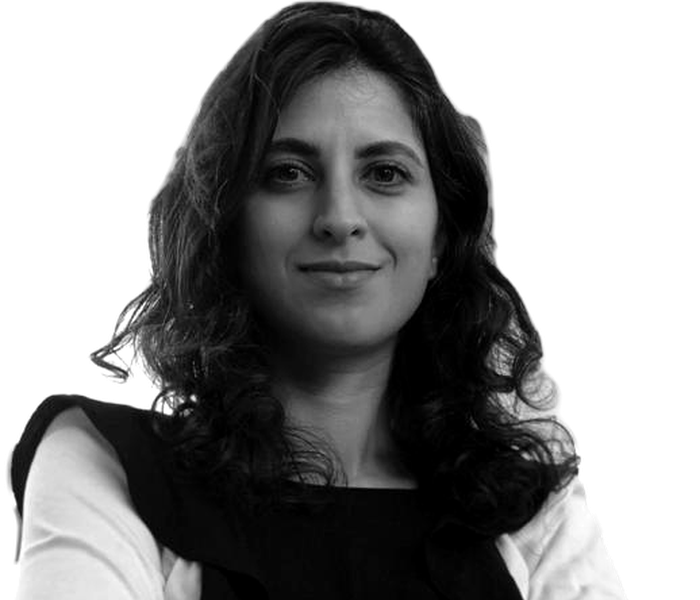

I'm Canan Colaço (read as “Janan”), a UX designer at Nokia, designing enterprise UX across its cloud-native software portfolio, including the Digital Operations Center.
I trained as an architect, and my PhD research looked at how people see, think and take part in design. At ISTAR – ISCTE I designed digital products for research and industry projects in architecture, urban planning and smart cities. Today I bring that research-led, systems-thinking approach to complex enterprise products, turning dense, technical workflows into interfaces people can rely on.

Architecture
Architecture, Urbanism and Building Sciences
Architecture
Designing enterprise UX across Nokia's cloud-native software portfolio, including the Digital Operations Center and Autonomous Networks. Lead designer for the Assurance and Unified Inventory parts of DOC.
Designed digital products for research and industry projects in architecture, urban planning and smart cities, including CityQuest.
you'll find me running trails, out surfing, making art, or exploring new technology.